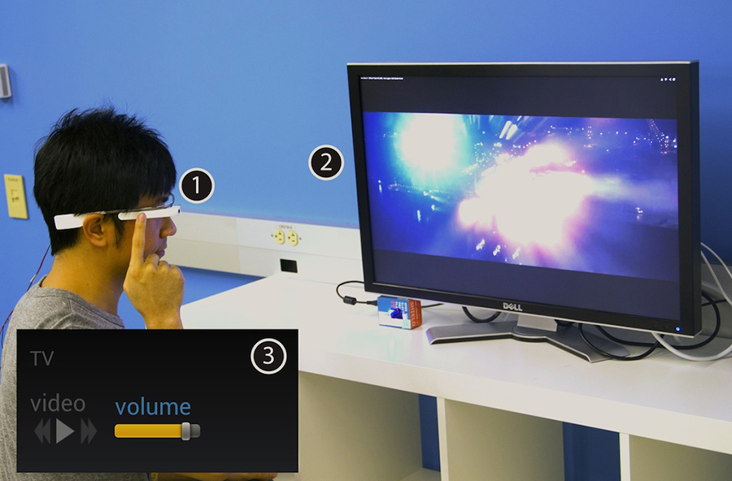
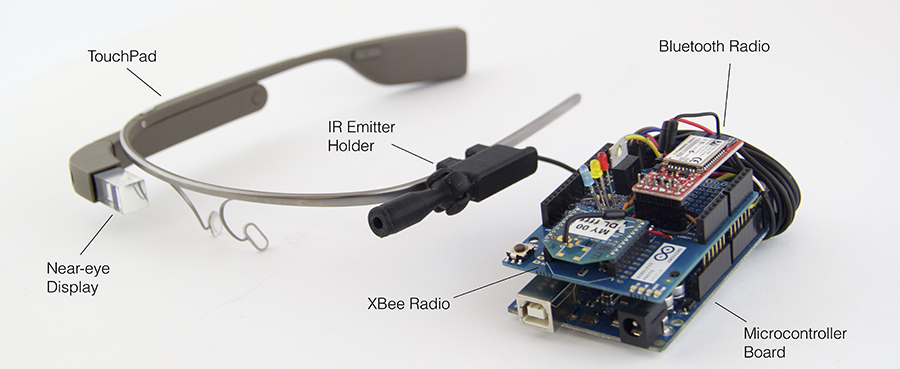
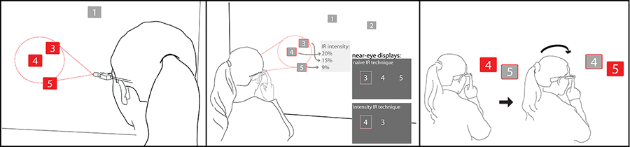

project //
hobs: head orientation based selection
occasion/context
university of california, berkeley institute of design research project
abstract
Emerging head-worn computing devices can enable interactions with smart objects in physical spaces. We present the iterative design and evaluation of HOBS, a Head Orientation Based Selection technique for interacting with these devices at a distance. We augment a commercial wearable device, Google Glass, with an infrared (IR) emitter to select targets equipped with IR receivers. Our first design shows that a naive IR implementation can outperform list selection, but has poor performance when refinement between multiple targets is needed. A second design uses IR intensity measurement at targets to improve refinement. To address the lack of natural mapping of on-screen target lists to spatial target location, our third design infers a spatial data structure of the targets enabling a natural head-motion based disambiguation. Finally, we demonstrate a universal remote control application using HOBS and report qualitative user impressions.
collaborators
Ben Zhang, Yu-Hsiang Chen, Achal Dave, Yang Li , Edward Lee , Bjorn Hartmann

using HOBS to control a tv

hardware setup: google glass augmented with custom hardware

illustration of disambiguation between two nearby devices by moving the head slightly.